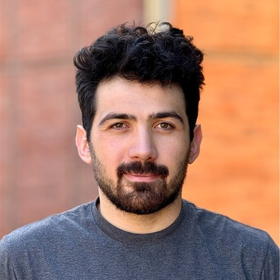
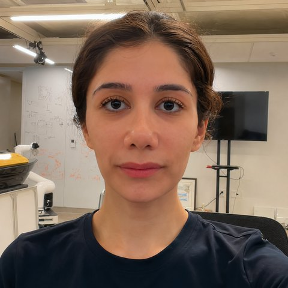

Ertugrul Taciroglu
Ertugrul Taciroglu is a professor of civil and environmental engineering at UCLA, where he has been on the faculty since 2001. His research develops computational methods for assessing and reducing the risk that natural hazards pose to the built environment at regional scale.
He received his Ph.D. and M.S. from the University of Illinois at Urbana-Champaign and his B.S. from Istanbul Technical University. He is the inaugural Editor-in-Chief of ASCE OPEN: Multidisciplinary Journal of Civil Engineering, a Fellow of the ASCE Engineering Mechanics Institute, and a recipient of the ASCE Walter Huber Research Prize and the NSF CAREER Award.
Doctoral students
Earthquake
Viviana Vela
Rapid regional post-earthquake damage assessment of school buildings

Zafer Kilic
Methods for regional rapid post-earthquake damage assessment
Yiwen Liang
Physics-based regional ground motion simulation and soil-structure interaction
Wind
Mohammad Askari
Hurricane risk and loss assessment at regional scales
Fire
Patrick Hadinata
Hyperlocal wildland–urban interface fire risk assessment
Devasmit Dutta
Bayesian updating of wildfire spread simulations
Cross-cutting

Melis Fidansoy
Urban natural hazard risk assessment with hyperlocal modeling
Sultan Aldakhil
The material point method for geodynamic problems
Alumni
Twenty-four doctoral graduates and eight postdoctoral researchers since 2006, now working across academia, national laboratories, public agencies, and industry.
See where they are now